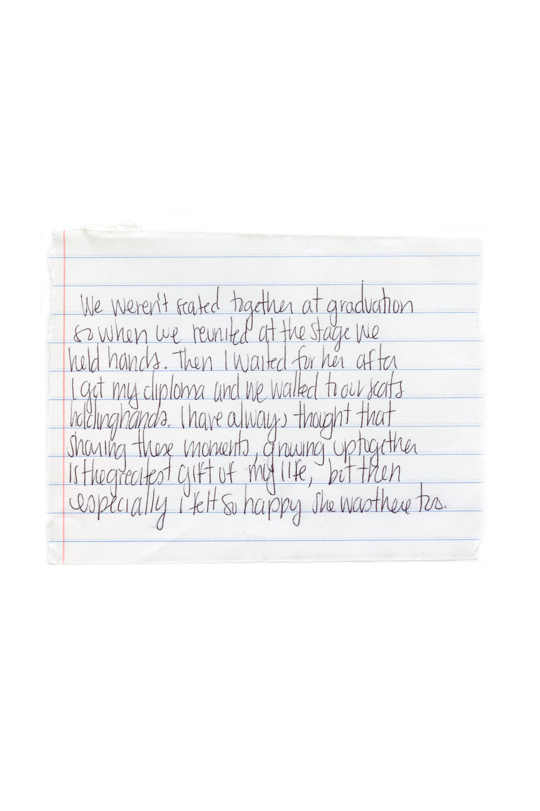

Chloe and I as children. The Twins project is about our lives, using our baby pictures was an important aspect to recognize that we have always, and always will be together. Connected in all senses.

This idea was more surrounded by the idea that most people cannot tell my sister and I apart on the spot. The curtain is a hiding us keeping the audience from really knowing which one is which. Playing on the idea that when something is covering us we are not recognized, but when we are revealed people have just as hard of a time telling us apart.

Chloe right, Ava left

This is a memory based picture. When we were around seven years old and started doing gymnastics at our local gym, we used to practice handstands against the couch together. Falling nearly every time against it and looking at each other while upside down and laughing.

This is a more conceptual portrait. Often as an identical twin, people use one aspect of the person to tell the difference between the two. It shadows a lot of who we are because in my own case I feel defined by one freckle. I am Ava because I have one freckle which in turn made me hate the one freckle. By shadowing one part of the face, I am spotlighting a part of a person, instead of who the person is at the core.

This is another memory based picture. When we were kids, the beach was our go to spot of the summer. I found as I grew up and watched my little cousins struggle to find someone to play with that I had the luck of always having someone there with me. I was never, and feel as though I never will be, alone.
This is a something I wrote, a memory of a nightmare. My sister and I sleep in the same bed often even when there are two beds for us. It is a comfort aspect, it often helps me go to sleep faster knowing she's there and that she is safe. This moment was one of those twin moments, something I am sure doesn't happens to most people.

This is how my sister and I got to the beach when we couldn't drive. This is still how we travel to photoshoots on occasion. Only ff my legs are feeling strong enough because Chloe doesn't ever pedal.

Chloe's journal and glasses. She's an English major, and though we both journal, this was a representation of her without her actually being in it.

Chloe

My sister and I are constantly holding hands. It's again a comfort thing for the both of us. Though it doesn't seem like these tiny things would mean anything, they mean so much to the both of us in our own way. We are constantly with eachother and though we still are two different people it is impossible to imagine my life without her. Holding hands is that one reminder that the other is there no matter what.

Anytime my sister and I just want to hang out we always lay together. We don't have to be doing anything, we just like to be together.

As twins we of course have the same birthday. It is a reminder of what we share in totality. We share nearly everything from hair color, to body shape, from fears, to aspirations. But on our birthday I am reminded especially that I share something rather special with her and only her. I get to grow up with someone, live life with someone who knows everything about me. I get to have a certain type of soulmate in a sense. Someone who will love me through it all, and someone I can love through it all. In fact as much as it might seem like a downer to share a birthday with someone, it is actually one of my favorite parts of being a twin. I get to be happy for a whole day, and she does too and we get to celebarte that happiness together.

The hardest part about this project was the idea that I had to photograph myself. I have trained my sister to model for me because I am comfortable with her. I am a photographer so the idea of sitting in front of the camera was something that really scared me. I didn't want my sister to watch at all. I set up the camera and had her direct me asked her how she sees me. She told me what to do but I was awkward and uncomfortable. But she made me get my camera because most of the time when she's really forced to look at me I'm behind the camera. It was a comfort thing though I still have to break out of the habit of being scared to sit down and be serious about getting my picture taken.

This was just a numbers thing. We weren't seated together and when we came to the realization at our first practice all the teachers sort of looked at each other wondering how it happened but that's how it had to be. The rows had to be even, so I just waited for her when I started my walk to the stage.

This is a conceptual idea playing on the idea that my sister and I are intertwined

Chloe right, Ava left.

A note my mom sent us, we tend to keep everything and when we share something like a note we always hang it up somewhere both of us can see it.

This is my sister and I with our mom. My mom and us are always in every bump in the road together which is why she has her eyes closed. My mom has always been the person we are told we look like which is a strange and wonderful thing to hear when you're a twin. Instead of looking like your sister you look like your mom. She of course went through the pain of carrying twins for nine months as well and I couldn't be happier that she did. We rely on our mom in a lot of ways, she has always been the mediator of arguments, the one to wipe our tears, and of course the one to yell at us but we always just ended up laughing. She let's us follow the dreams we want, gave us the power to continue our education, and always manages to pull rabbits out of hats to get us where we need to be.

Chloe

Ava

If you know anything about my sister and I, it probably is that the most important thing to us is tea. Every morning we share a pot of tea together. We started drinking tea after our dad who drinks more cups a day than we do. We had real life tea parties growing up nearly once a week. Though it was a childhood thing we continue to share tea every day. These are the cups we use in the morning together. We start our day together every morning and it's important because though we try to stay up at night for each other, it is at times the only part of the day we see each other.

Chloe
My sister and I always write each other notes and so I gave each of us a promt, they aren't supposed to be read straight out, though you can attempt if you'd like. The long pieces are not supposed to be seen as much, the small pieces are to us what it's like to be a twin. The prompts were used to help us really think about the relationship we have and how it's different.

Chloe

Can you tell who is who without looking back?